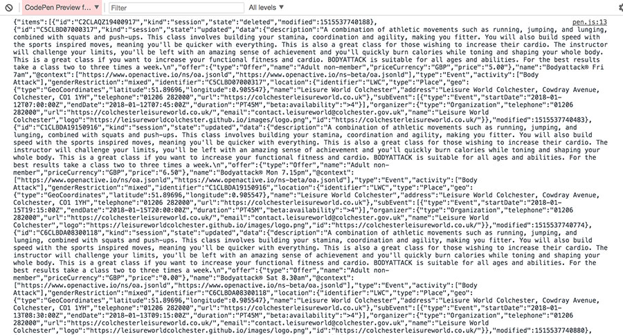

Quick start guide
Using OpenActive data to list opportunities
Introduction
The goal of this quick start guide is to rapidly introduce you to what it means to use OpenActive data, and to start to become familiar with some of the important principles.
We’re going to access a single data feed, retrieve all paged opportunity data, and output this.
The examples used are deliberately extremely simple, so don’t contain any robust error handling, or more advanced features - they’re just to get you up and running with the concept as quickly as possible.
Step 1 - Requesting a feed
In this step we’re going to be requesting a specific feed URL, which will return us JSON to parse and display. The feed we’ll use in this example is one that conforms to the OpenActive standards - Colchester Leisure World sessions.
The feed URL is lw-colchester-openactive.herokuapp.com/ and you can find more information about the licence and documentation here.
Tips:
We recommend that you follow this guide using the above set of data initially, but if you’d like to use other data you can find all registered feeds at status.openactive.io.
At present the feeds available don’t tend to allow cross-origin access. For the purpose of this quick JavaScript-based demo we’re going to use a workaround where the feed URL is appended to a proxy URL. If you’re making your request server-side you won’t need to do this.
Task:
Run the below, read through the JavaScript snippet, and use your browser's developer tools console to inspect the Result pane and view the output. The pane itself will be blank as we're not outputting any HTML yet.
See the Pen OA using data - 1 by SJ (@greywillfade) on CodePen.
Step 2 - Data returned
If everything has gone correctly, your browser developer tools console should show something like this:
The data returned is JSON, and includes a set of session items. Each of these items will have a state of updated, or deleted, which we’ll discuss in more detail with regards to paging in the next section. In the following box we have a deleted session and an updated session.
Task:
For now, familiarise yourself with the following and make sure that you understand how this matches the patterns that you're seeing in your logged data.
See the Pen OA using data - 2 by SJ (@greywillfade) on CodePen.
For more information on the data model behind this, please see the Modelling Opportunity Data specification.
Step 3 - Paging through the data
Knowing whether to retrieve more data
We’ve just output the first page of data. Along with the items, you’ll also see that we’re returning a key named ‘next’. Where there is another page of results, this key will have a value, and that value will be different to the URL of the last request made.
How data is ordered
At this point it’s really important to understand that OpenActive data conforms to the RPDE specification.
With this format, you get a continuous list of records that are sorted in the order that they were updated. Each record must only be represented once in the list at any given moment, with its position in the list depending on when it was updated.
As such, the first page of data accessed from the root URL will contain the oldest records. Each subsequent page will contain amendments - new items, updated items (both covered with a state of updated), and deleted items. By paging through to the end and then polling there for future changes, we’re able to build up a full picture of the data set.
To better illustrate, consider the following image. The items in this are ordered first by modified timestamp, and second by ID.

If an item is modified (or deleted), its record will move to the end of the set. If the item in red (with ID 2) becomes updated, its timestamp would be modified and it would move to the end of the list. If we'd previously encountered it whilst doing our first pass of paging through the entire data set, we'd get the updated version at the end whilst polling for changes.
Let’s build up our code snippet to add paging through to the end. Note that this basic example won’t wait and poll for data after we’ve reached the end of the items.
Task:
Read through the below snippets and as before, inspect the Result pane using your browser's console. Alternatively amend your JavaScript and HTML, by pasting in the following code.
See the Pen OA using data - 3 by SJ (@greywillfade) on CodePen.
Step 4 - Displaying the data
At this point you’ve retrieved all of the data that the URL returns. At this point you’re likely to want to store the data locally, or do some processing based on the item state, but for the sake of this guide we’re just going to output some basic details to the page as a starting point.
Task:
Run the example below and understand the snippets. Alternatively amend your JavaScript and HTML, by pasting in the updated code.
See the Pen OA using data - 4 by SJ (@greywillfade) on CodePen.
In this example we’re just displaying the title of 'updated' sessions, and ignoring sessions with a deleted state. For more information about the model including all attributes available and the standards around these, please reference the Modelling Opportunity Data spec.
Step 5 - Evolve your example
That’s it! You should now have a working demo containing open opportunity data.
To start evolving this into something that meets your real-world needs, please see the following resources.
- FAQ
- Aggregating open opportunity data
- Making your opportunities bookable
- Documentation
- etc